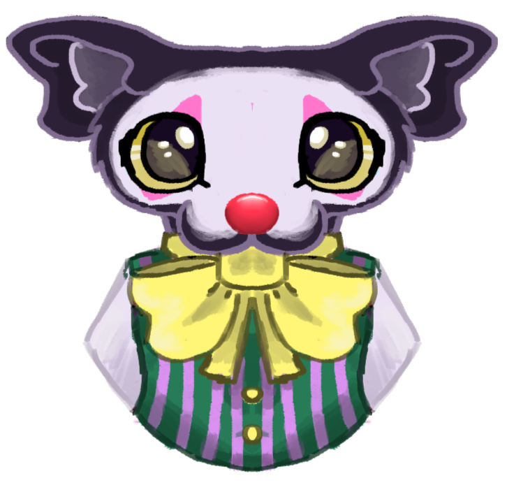

Home page! | About me! | Minecraft review! | Palia review! | Lost Ember review!
Hey there! My name is Juniper and I enjoy doing crochet and I want to start my own crochet business one day!
I quite enjoy playing games in my free time and i've played many games so far, such as Stray and Pokemon! My favourite Pokemon is eevee (basic i know) due to my first shiny Pokemon ever being an eevee!
I do prefer more chill/cozy games whenever I play as I don't really like being stressed when playing and I have really enjoyed games like Pokemon and Animal crossing because of this!
